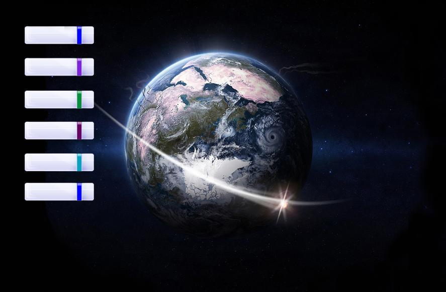
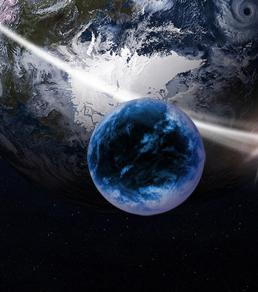
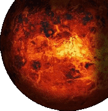
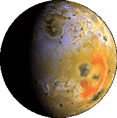

В этом разделе представлены работы в области декора интерьеров.Сюда
же отнесены роспись тканей (батик) и роспись домашней утвари (изделий из стекла и
дерева). Здесь также имеются декоративные изделия из металла (ковка), а также
элементы декора со световыми эффектами.